SISPA
Sistema de Alarma Inteligente para la Seguridad de la Mujer. Portable, discreto y activado por radiofrecuencia.
¿Qué es SISPA?
Diseñado con enfoque social, preventivo y de alta portabilidad.
Tecnología al Servicio de la Protección
SISPA surge como una respuesta directa a la necesidad de contar con dispositivos de salvaguarda personal accesibles y discretos. Su arquitectura permite ocultar la unidad central de procesamiento dentro de un estuche o cajita compacta, dejando un botón de activación rápida al alcance inmediato de la usuaria para disparar alertas a distancia mediante radiofrecuencia sin depender exclusivamente de redes celulares o de internet.
Componentes Principales
Hardware integrado en el prototipo físico de laboratorio.
Placa Arduino
Microcontrolador encargado del procesamiento de entradas digitales e impulsos de alerta en tiempo real.
Módulos RF
Enlace emisor y receptor inalámbrico de radiofrecuencia para activación remota sin cableado.
Buzzer y LEDs
Elementos de disuasión inmediata mediante advertencia sonora de alta potencia y destello visual.
Cajita Portable & Baterías
Estuche compacto de protección para transportación discreta de bolsillo con energía recargable.
Mecánica de Operación
Secuencia desde la activación hasta la emisión de la señal de alerta.
Portación Segura
El circuito principal permanece oculto en la cajita, manteniendo el botón táctil al alcance.
Accionamiento
En caso de riesgo, la usuaria presiona el botón de pánico de manera rápida y discreta.
Transmisión RF
El transmisor envía la señal codificada de radiofrecuencia de forma instantánea.
Alerta Activa
La placa procesa la instrucción disparando al instante el buzzer y los LEDs de pánico.
Impacto Social
Diseñado pensando en la tranquilidad y la respuesta inmediata.
100%
Portable y Discreto
10m
Alcance de señal RF
0
Dependencia de Internet
5V
Alimentación Segura
Lógica de Programación
Fragmento del código cargado en el microcontrolador.
// Configuración de pines en Arduino const int pinBoton = 2; const int pinRF = 8; const int pinBuzzer = 10; const int pinLED = 12; void setup() { pinMode(pinBoton, INPUT); pinMode(pinRF, OUTPUT); pinMode(pinBuzzer, OUTPUT); pinMode(pinLED, OUTPUT); } void loop() { if (digitalRead(pinBoton) == HIGH) { digitalWrite(pinRF, HIGH); // Enviar señal digitalWrite(pinBuzzer, HIGH); // Activar alarma digitalWrite(pinLED, HIGH); // Encender luces delay(3000); digitalWrite(pinRF, LOW); digitalWrite(pinBuzzer, LOW); digitalWrite(pinLED, LOW); } }
Galería del Prototipo
Evidencia fotográfica completa del ensamblaje, cableado y pruebas.


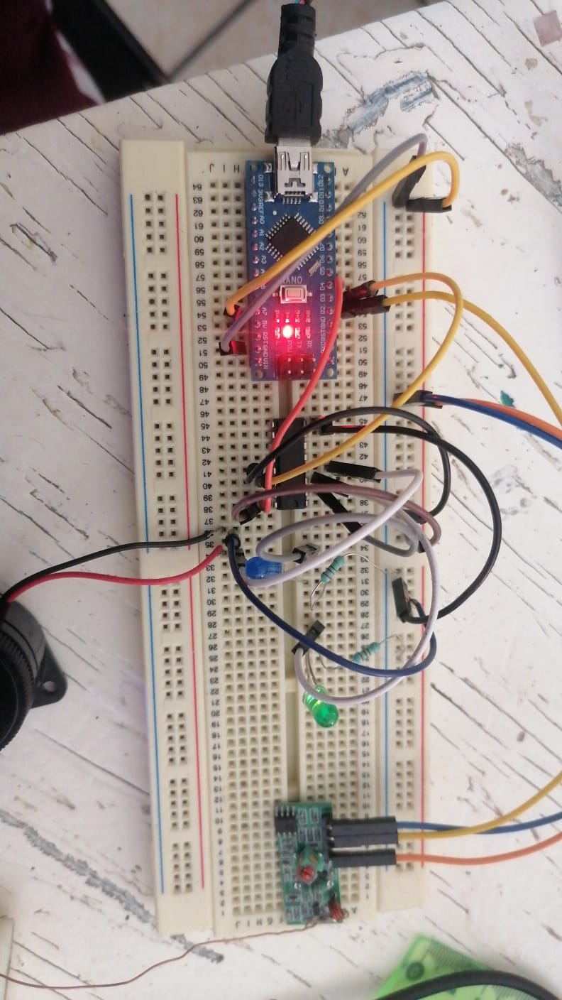
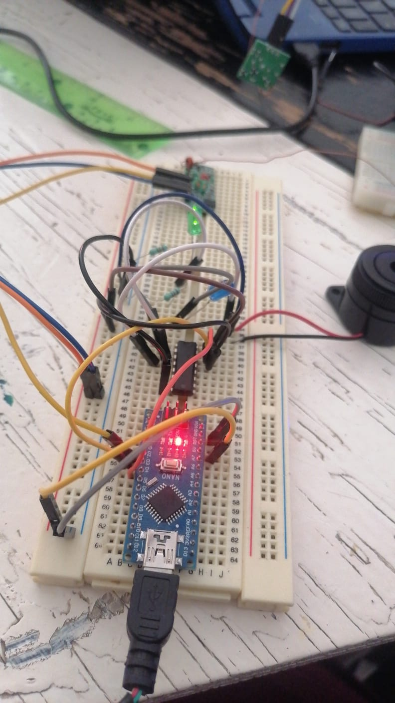

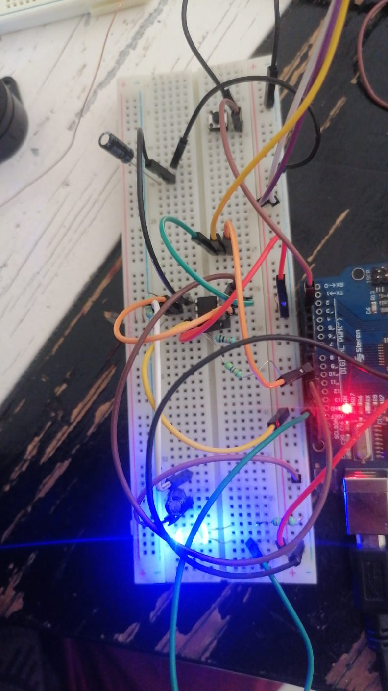

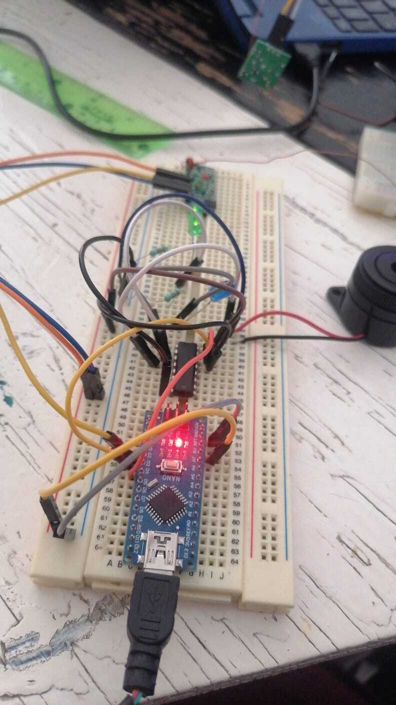
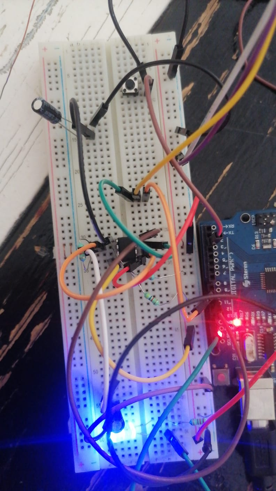
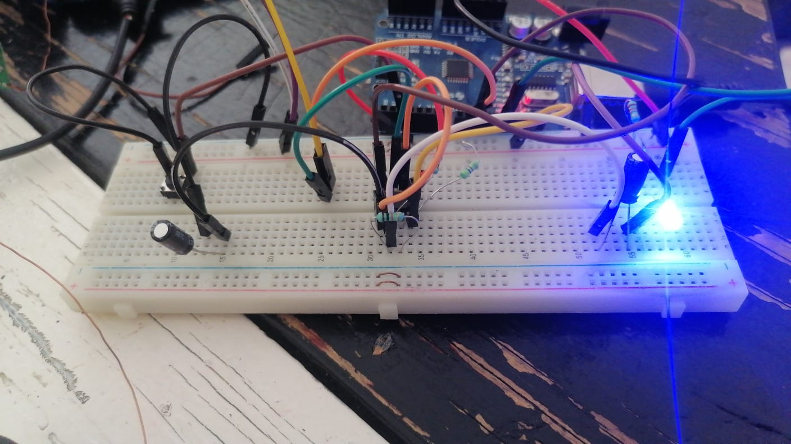
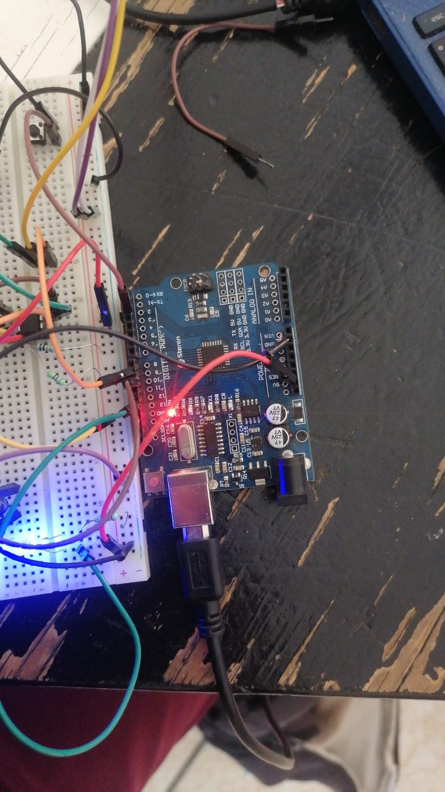
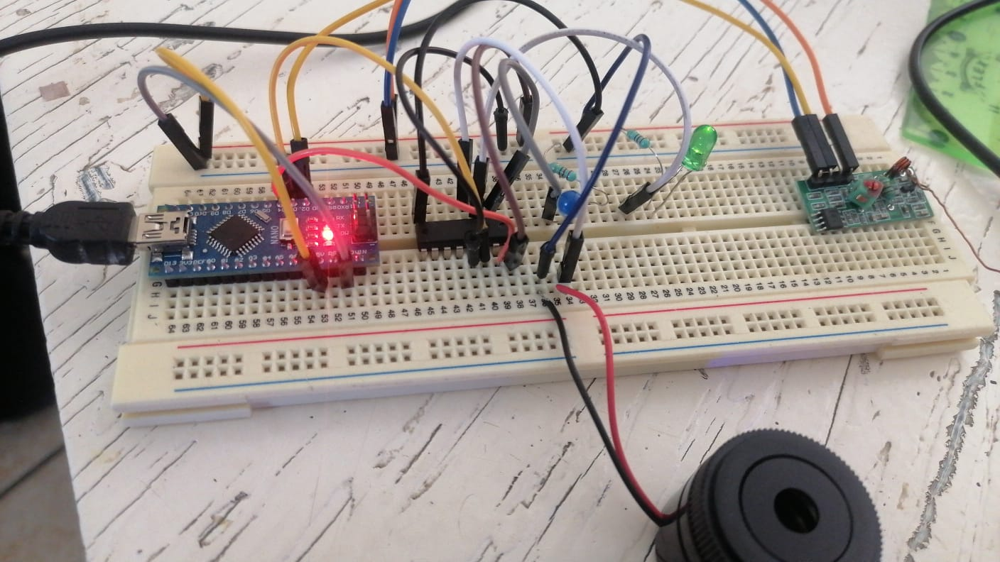
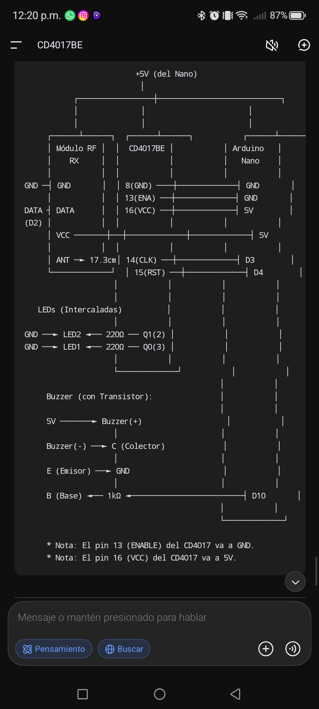
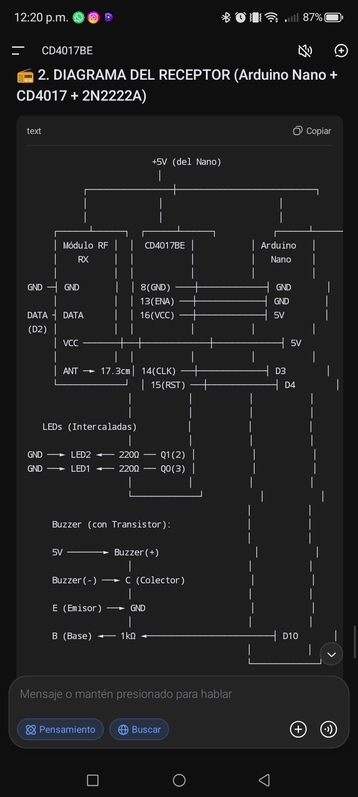
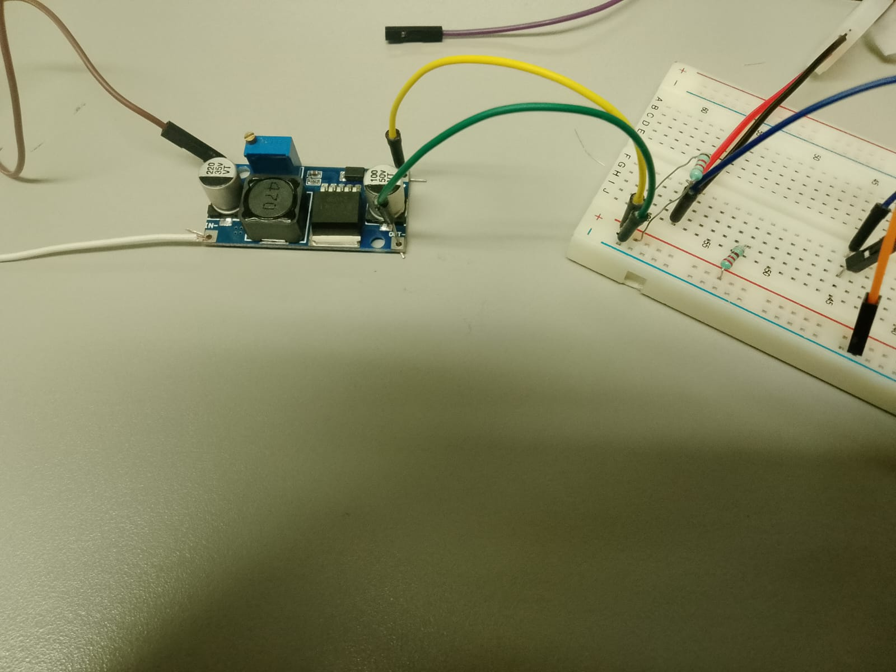
Simulador M - Monitoreo
Prueba la respuesta lógica de la placa Arduino y la transmisión inalámbrica RF.
[00:00:00] > Sistema SISPA iniciado. Esperando interrupción en Pin Digital 2...
Créditos del Proyecto
CECyTEH Plantel Pachuca
Proyecto desarrollado por estudiantes del plantel.
Asesor Técnico: Prof. Carlos Vizcaíno Salinas